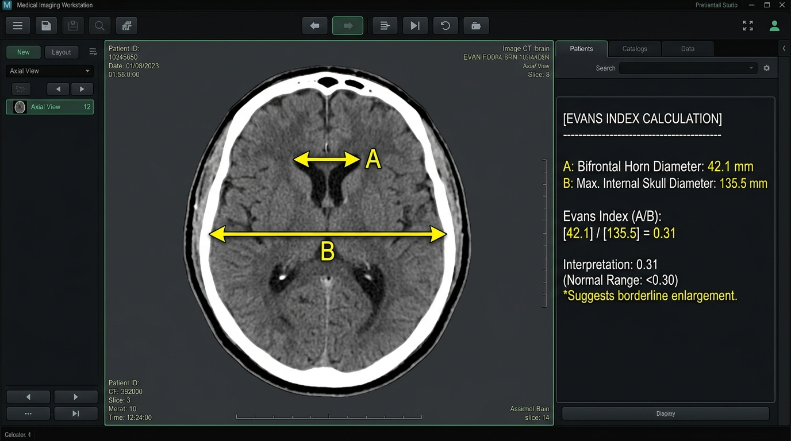

Patient Metadata & Measurement Units
Longitudinal Evans' Index Time Points
Enter measurements across consecutive scan dates. The Evans' Index is calculated automatically as Bifrontal Horn / Maximal Internal Skull.
| # Time Point | Date * | Context | Bifrontal Horn Diameter (mm) * | Maximal Internal Skull Diameter (mm) * | Evans' Index | Clinical Status | Action |
|---|
Longitudinal Evans' Index Bar Graph
Dates are automatically ordered chronologically in ascending sequence on the X-axis.
Bar Graph Requires ≥ 2 Time Points
Please fill in valid Date, Bifrontal Diameter, and Maximal Internal Skull Diameter for at least 2 time points to display the dynamic chronological bar graph.
Anatomical Reference & Clinical Guidance

Axial CT/MRI slice showing Bifrontal Horn Width (A) and Inner Skull Width (B).
Calculation Formula
Diagnostic Cut-Off Thresholds
-
< 0.30
Normal Ventricular Size:
Ventricular system is within standard physiological limits for age.
-
0.30 - 0.33
Mild Ventriculomegaly:
Elevated ventricular ratio. Suggestive of early hydrocephalus or mild ex-vacuo enlargement.
-
> 0.33
Marked Ventriculomegaly:
High suspicion for Idiopathic Normal Pressure Hydrocephalus (iNPH) or Obstructive Hydrocephalus. Correlate with clinical triad (gait impairment, cognitive decline, urinary urgency).